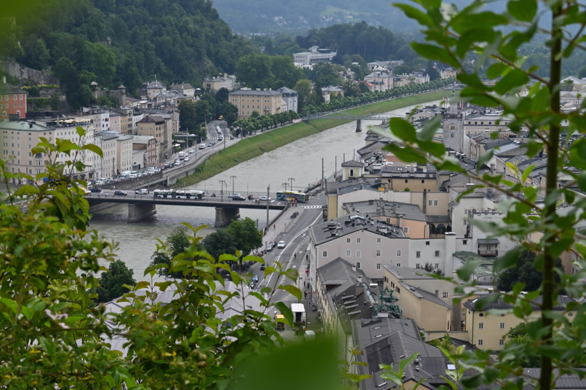
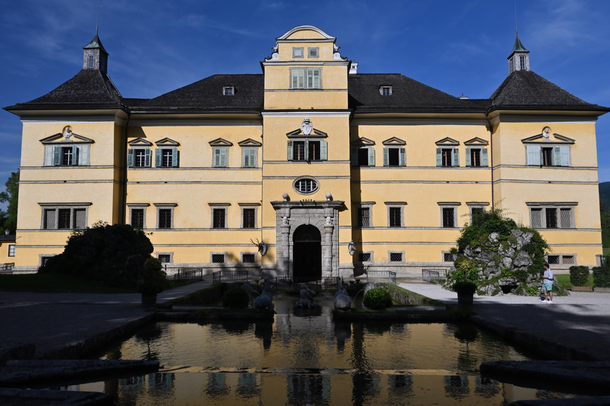
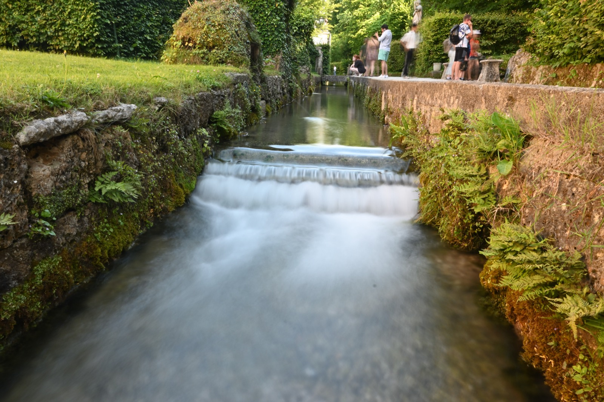
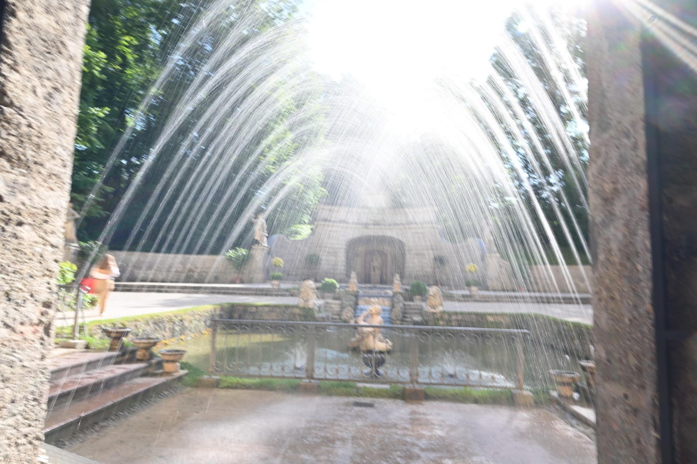
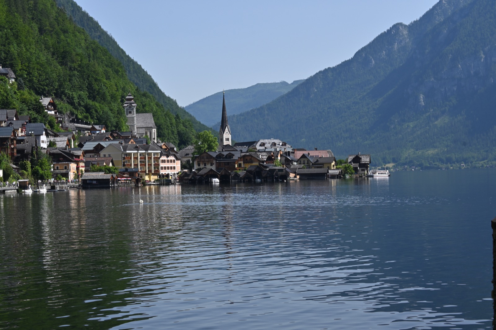
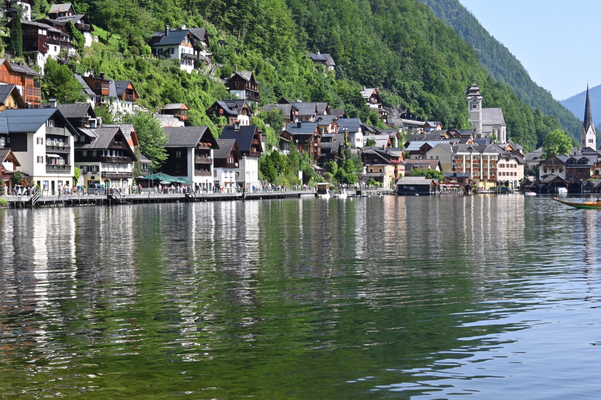
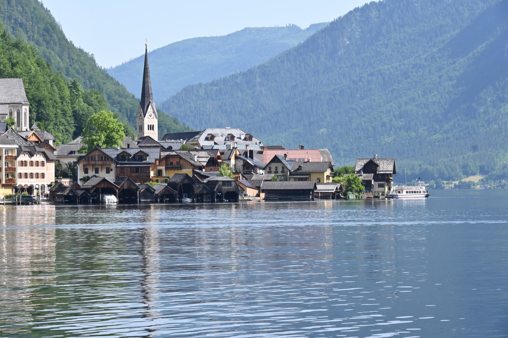
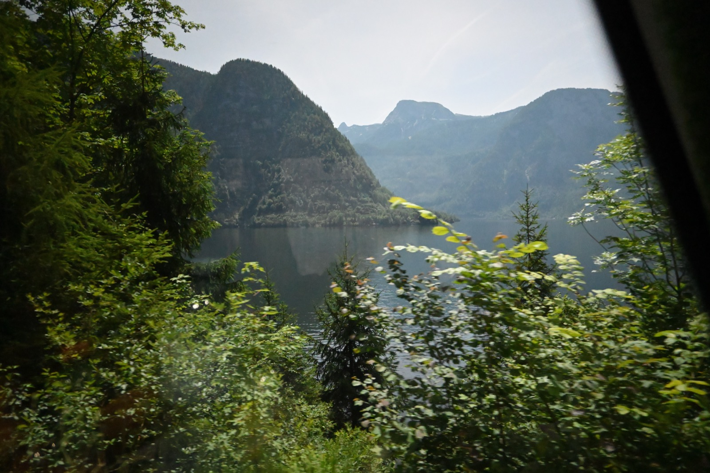

About Salzburg
Salzburg is a city in the Austrian state of Salzburg, known for its baroque architecture and as the birthplace of Wolfgang Amadeus Mozart.

Austria
Salzburg is a city in the Austrian state of Salzburg, known for its baroque architecture and as the birthplace of Wolfgang Amadeus Mozart.
Salzburg is a city in the Austrian state of Salzburg, known for its baroque architecture and as the birthplace of Wolfgang Amadeus Mozart.















Travel photography moment from salzburg.